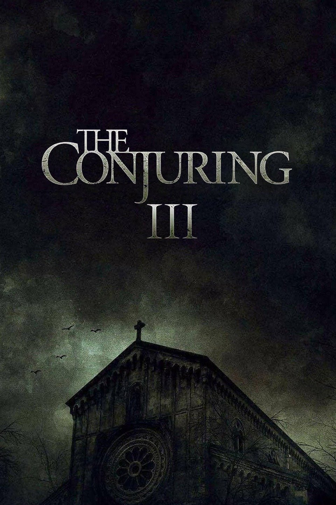
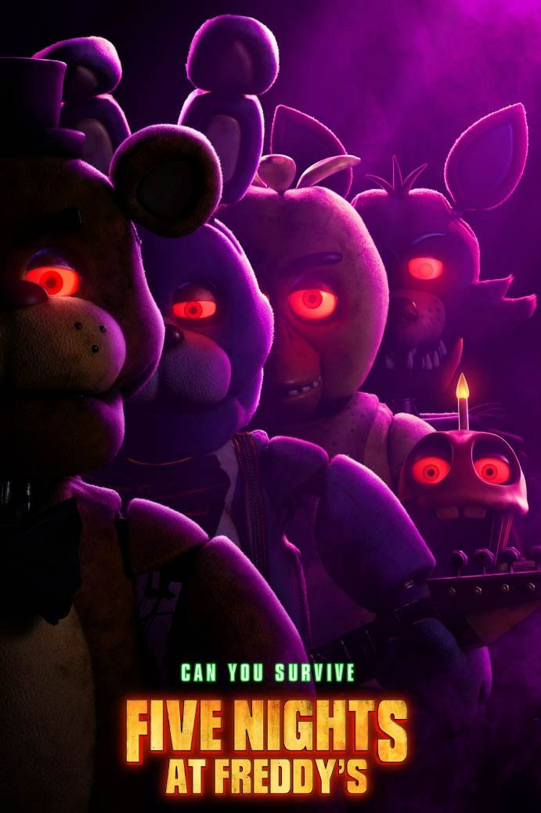
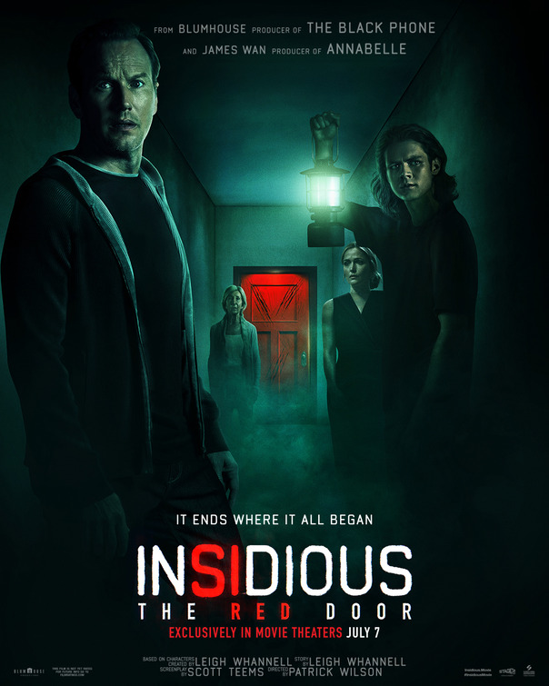
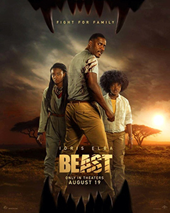
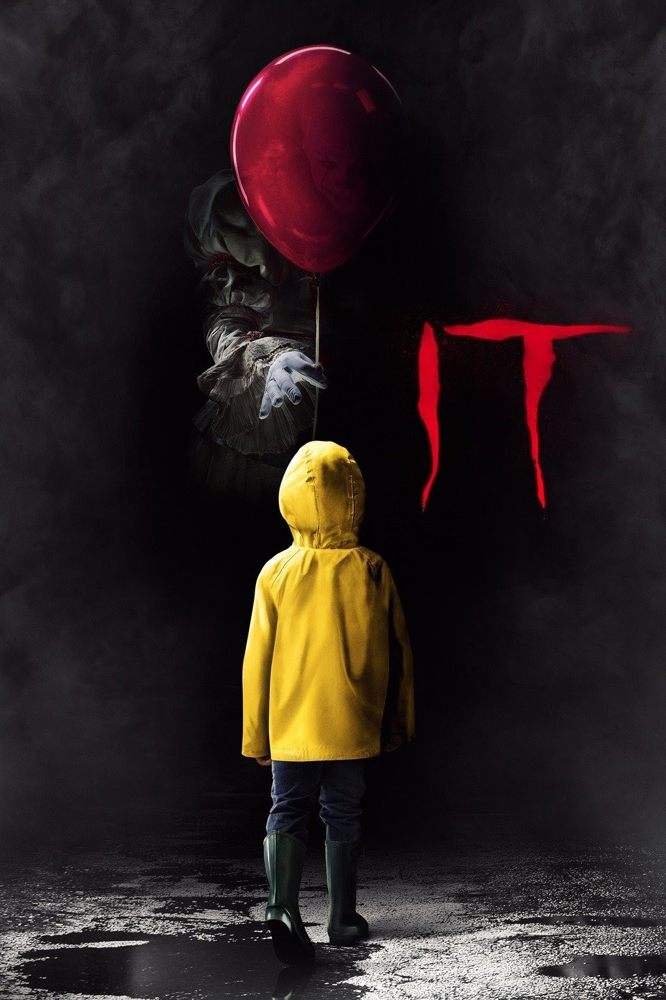
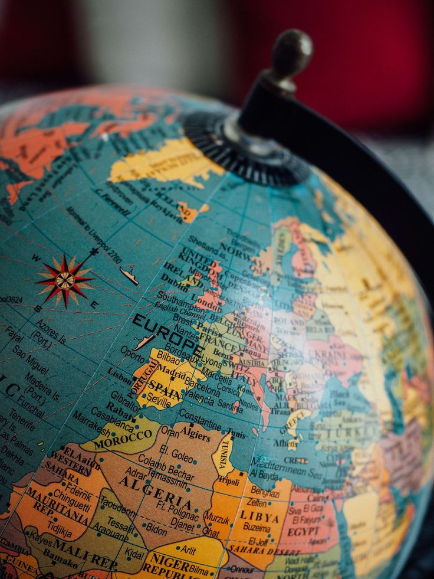
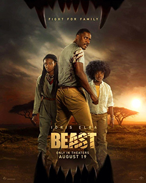
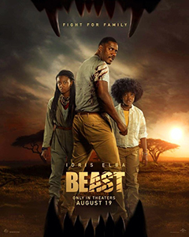
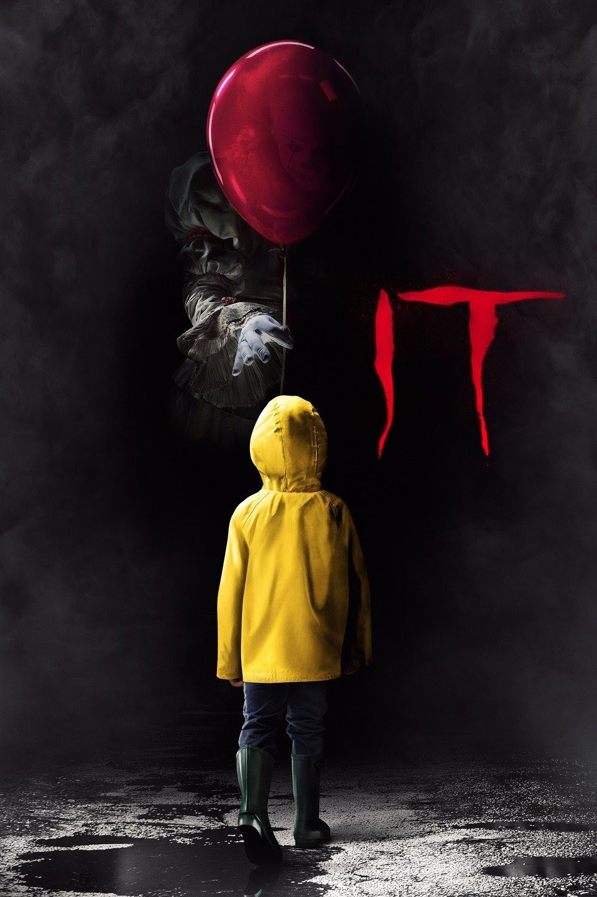
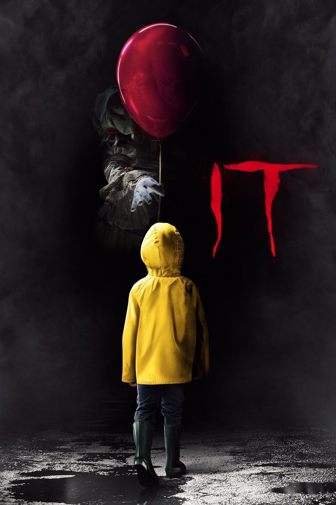

Among the many movies i had watched are from various genres,but the most-liked ones are horror, thriller and so on.If I were to list all the movies I've seen it would fill this column haha.So below are some of my favorite horror movies.Meanwhile, most of my favorite movies are from the same production and director.What can be done, they are very talented in making horror movies right? so please watch it okay!





The rating for the movie I recommend is indeed out of 10 based on my opinion. If you like horror, maybe just like me.
POETOPHILE
When He Leaves You, Unrequited Feelings and Learning to Love Myselfare among my favorite poetry books. Click on the picture below to see a section of poetry taken from the books:
Poetry is my comfort. It evokes my emotions and imagination so it makes me living in my own world. The feeling of reading a poem is like being able to feel how the writer expresses their feelings toward a piece of poetry. Poetry has always been in my arms.
GEOPHILE

Among of many academic fields, geography is my most-liked subject because it involves the entire contents of the earth. Althought i'm not and explorer, I like to know what is in every corner of this earth and it makes me know more about my own country and foreign countries as well.Since history is also closely related to geography, it increase more my interests researching phenomena related to the place.World Map here!
 

 
